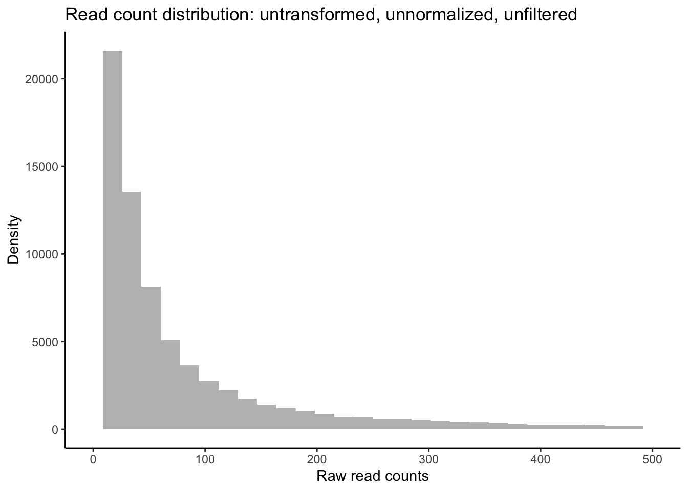
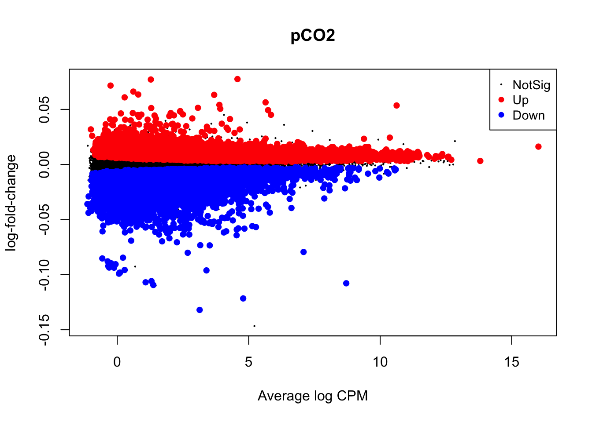
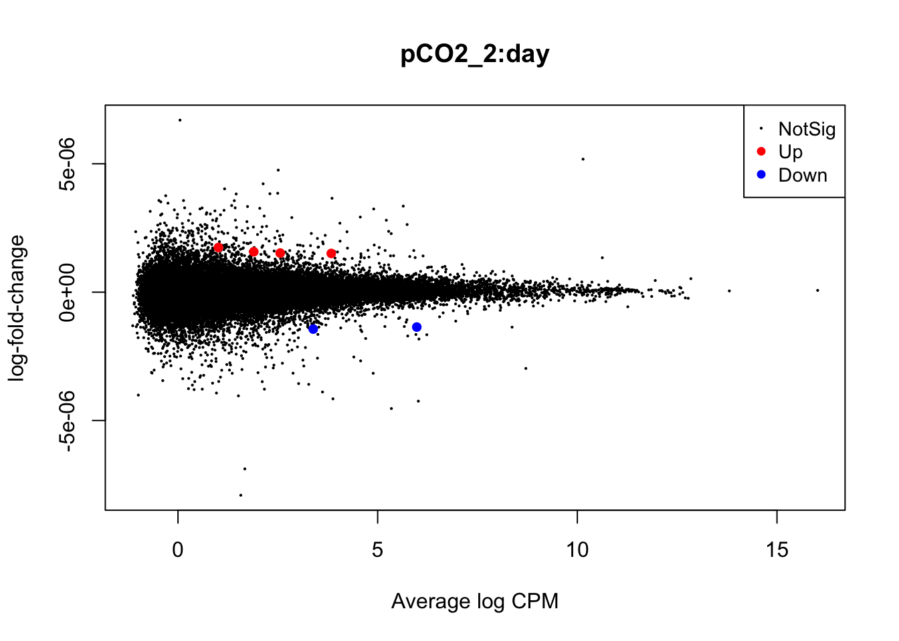
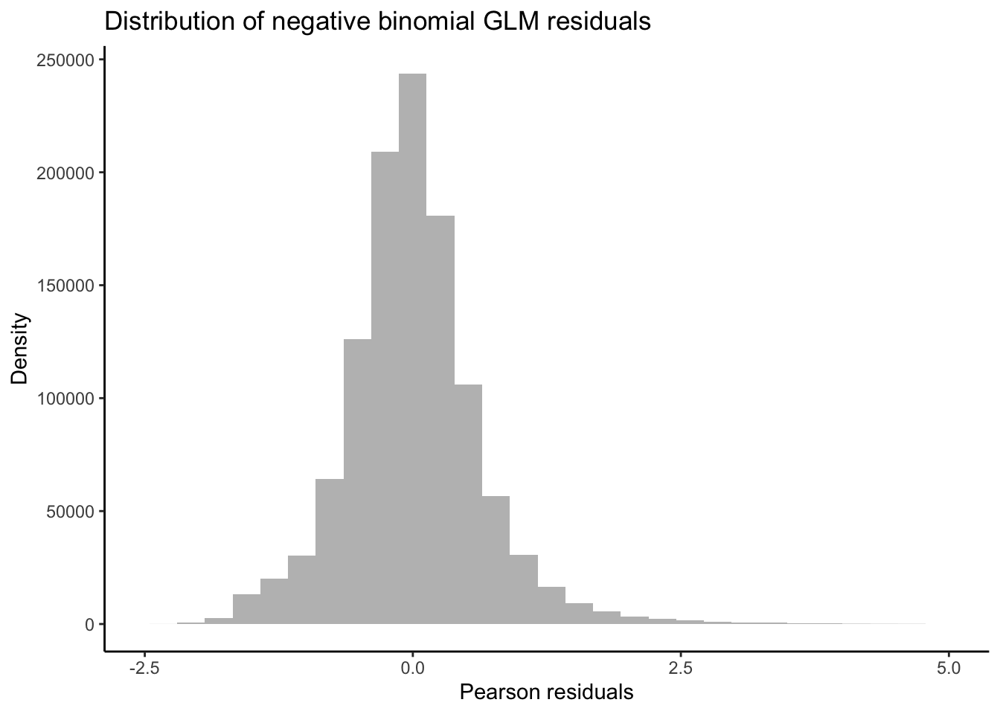
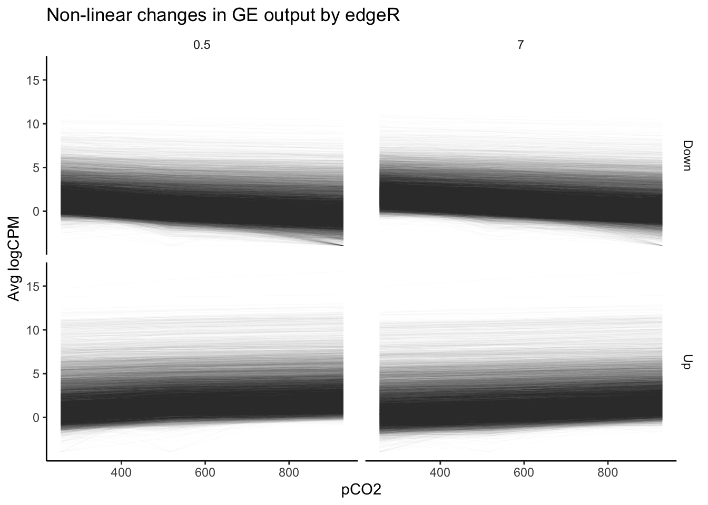
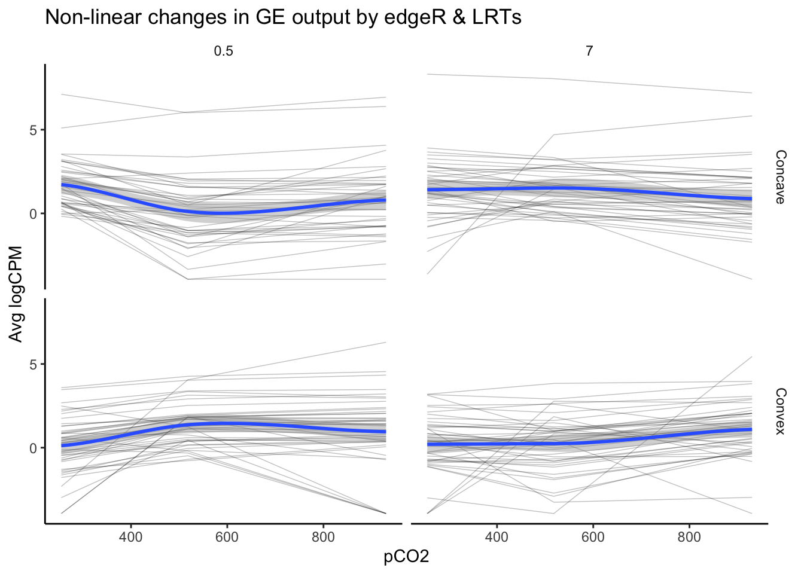

Fitting Multifactorial Models of Differential Expression
Samuel N. Bogan
Intro to multifactorial RNA-seq models
Studies of molecular responses to environmental change increasingly employ multifactorial experimental designs incorporating different developmental stages, stressors, populations, or non-linear dynamics that resolve interactions between variables that shape expression, physiology, and performance. After an experiment during which a study organism was exposed to abiotic variation and perhaps other variables, researchers interested in how gene expression correlates with these variables will often extract RNA across treatment groups, prepare cDNA libraries for sequencing, and conduct an analysis of differential expression (DE) across variables of interest after mapping and counting RNA-seq reads. DE analysis is achieved by fitting RNA-seq read count data to statistical models, often using tried-and-true DE packages. Most packages do not have the flexibility to accommodate a number of common experimental design components and it can be difficult to navigate their functionality for fitting multivariate models. When these packages fall short, determining how to fit customized multifactorial models yourself can be an additional challenge. Many great walkthroughs exist for conducting DE analysis across using single-variable experimental designs, but there is a lack of guidance on multifactorial approaches for testing for DE and modelling gene expression. Regardless of whether you have RNA-seq data on hand or you’re in the process of planning your experiment, this walkthrough will help you navigate what DE packages and model fitting approaches are best suited to your experimental design.
Targeted audience
This walkthrough is for both intermediate and expert practitioners of RNA-seq analyses, and most of all, those new to multifactorial RNA-seq. We have written this page with the assumption that readers have a basic familiarity with model fitting and statistical analysis, as well as next generation sequencing technologies, RNA-seq workflows, and the R statistical environment.
Variables we will cover
This walkthrough can be broken down into different types of predictor variables that can be incorporated in models of gene expression. In the order we address them, these variables include:
- Non-linear fixed effects
- Continuous fixed effects
- Interactive fixed effects
- Random intercepts
- Random slopes
Features of popular DGE packages
Two important considerations when choosing a DE package to analyze RNA-seq data are the distribution family used by the package and the effect types it incorporate into a model. The DE packages we will cover assume the following read count distributions and are capable of fitting the following effect types:
| Program | Distribution | Continuous fixed eff. | Random intercepts | Random slopes | Interactive eff. | Non-linear eff. |
|---|---|---|---|---|---|---|
| edgeR | Negative binomial generalized linear model | ✔ | ✖ | ✖ | ✔ | ✔ |
| DESeq2 | Negative binomial generalized linear model | ✔ | ✖ | ✖ | ✔ | ✔ |
| Voom | Mean-variance linear model | ✔ | ✔ | ✖ | ✔ | ✔ |
Summary of approach
We will walk you through (i) how to conduct essential checks of your data such as principal components analysis and observing the distribution of filtered read counts, (ii) evaluating each package’s functionality for multifactorial model fitting, and (iii) how to fit each type of predictor by performing differential expression tests using real data. These data come from an experiment that exposed the Antarctic pteropod (a free-swimming planktonic snail) Limacina helicina antarctica to three continuous levels of ocean acidification (OA) for either 0.5 or 7 days (Bogan, Johnson, and Hofmann 2020). These RNA-seq counts are derived from reads mapped and counted via RSEM (Li and Dewey 2011) using a de novo reference transcriptome that includes transcript isoforms assembled by Johnson and Hofmann (2016).
Throughout this walkthrough, we will provide examples of custom scripts for fitting linear, linear mixed models, generalized linear models to read count data using for loops in order to provide functionality where it cannot be met by most differential expression packages.
At the end of the walkthrough, we demonstrate how to compare model predictions by different packages for different effect types commonly used in multifactorial RNAseq analyses.
Let’s start by loading our required packages…
## Unhash and run the code below if you believe you may need to install the packages loaded below
#invisible(lapply(c( "tidyverse", "ape", "vegan", "GGally",
#"rgl", "adegenet", "MASS",
#"data.table", "plyr", "lmtest", "reshape2", "Rmisc", "lmerTest","statmod"),
#function(p){
#if(! p %in% rownames(installed.packages())) {
#install.packages(p)
#}
#library(p, character.only=TRUE)
#}))
#if (!require("BiocManager", quietly = TRUE))
#install.packages("BiocManager")
#BiocManager::install(c("DESeq2","edgeR","arrayQualityMetrics"))
# Load packages
library(DESeq2)
library(edgeR)
library(tidyverse)
library(ape)
library(vegan)
library(GGally)
library(arrayQualityMetrics)
library(rgl)
library(adegenet)
library(MASS)
library(data.table)
library(plyr)
library(lmtest)
library(reshape2)
library(Rmisc)
library(lmerTest)Filter and visualize read counts
Before model fitting and testing for DE, it is important to visually inspect read counts pre- and post-filtering. In this walk through, we will plot the distributions of read counts and sample loading to multidimensional scaling axes (e.g., plotting principal components or principal coordinates analyses). Looking at these plots, we can (i) determine whether the distribution of our data match the assumptions of model families used by different packages and (ii) determine whether one or multiple variables within a dataset explain a significant degree of variation in gene expression across replicates. Depending on the distribution of your data and the variables that appear important (or variable you would like to incorporate into your models), we will then demonstrate how to choose an appropriate package to test for DE.
Most DE packages assume that read counts possess a negative binomial distribution. The negative binomial distribution is an extension of distributions for binary variables such as the Poisson distribution, allowing for estimations of “equidispersion” and “overdispersion”, equal and greater-than-expected variation in expression attributed to biological variability . However, RNA-seq datasets can exhibit poor fits with the negative binomial distribution (Hawinkel et al. 2020). It is well worth visualizing and testing the distributions of RNA-seq read counts before and after filtering. Keep in mind that the distribution applies not to the raw data, but the residuals of a model. Additionally, individual models are fit to the read counts of each gene. Thus, the most accurate representation of how appropriate a negative binomial distribution is for read counts would come from plotting the distribution of residuals across all genes following model fitting. Below is a visual example of negative binomial distributions that possess different means and variances:

Now let’s first plot the distribution of unfiltered reads from our dataset:
# Read in matrix of RSEM expected read counts
data <- read.delim("RNA_data/GE2_expected_counts_gene.matrix", sep = "\t", header = T, row.names = 1)
# Peak at data to check that it looks okay
head(data)## B7a.genes.results B7b.genes.results B7c.genes.results
## TR100110|c0_g1_i1 4.00 10.00 3.00
## TR101578|c0_g1_i1 0.00 0.00 0.00
## TR1047|c0_g1_i1 14.00 19.00 11.00
## TR105096|c0_g1_i1 14.00 12.00 9.00
## TR107626|c1_g1_i1 4530.93 28139.91 14141.83
## TR11301|c0_g1_i1 0.00 0.00 0.00
## B12a.genes.results B12b.genes.results B12c.genes.results
## TR100110|c0_g1_i1 6.00 9.0 8.00
## TR101578|c0_g1_i1 0.00 0.0 0.00
## TR1047|c0_g1_i1 15.00 14.0 9.00
## TR105096|c0_g1_i1 15.00 5.0 10.00
## TR107626|c1_g1_i1 80846.09 5649.4 30756.08
## TR11301|c0_g1_i1 0.00 0.0 0.00
## R7a.genes.results R7b.genes.results R7c.genes.results
## TR100110|c0_g1_i1 18.0 15.00 6.00
## TR101578|c0_g1_i1 0.0 0.00 0.00
## TR1047|c0_g1_i1 16.0 16.00 27.00
## TR105096|c0_g1_i1 25.0 15.00 6.00
## TR107626|c1_g1_i1 137592.5 45299.57 14843.47
## TR11301|c0_g1_i1 0.0 0.00 0.00
## R12a.genes.results R12b.genes.results R12c.genes.results
## TR100110|c0_g1_i1 11.00 13.0 9
## TR101578|c0_g1_i1 0.00 0.0 0
## TR1047|c0_g1_i1 23.00 14.0 11
## TR105096|c0_g1_i1 14.00 45.0 12
## TR107626|c1_g1_i1 21210.52 230436.5 0
## TR11301|c0_g1_i1 0.00 0.0 0
## Y7a.genes.results Y7b.genes.results Y7c.genes.results
## TR100110|c0_g1_i1 6 4 12.0
## TR101578|c0_g1_i1 0 0 0.0
## TR1047|c0_g1_i1 20 3 18.0
## TR105096|c0_g1_i1 9 1 13.0
## TR107626|c1_g1_i1 0 0 112214.6
## TR11301|c0_g1_i1 0 0 0.0
## Y12a.genes.results Y12b.genes.results Y12c.genes.results
## TR100110|c0_g1_i1 21.00 12 12.00
## TR101578|c0_g1_i1 0.00 0 0.00
## TR1047|c0_g1_i1 25.00 14 9.00
## TR105096|c0_g1_i1 14.00 19 24.00
## TR107626|c1_g1_i1 86243.14 148100 74153.54
## TR11301|c0_g1_i1 0.00 0 0.00The table of read counts above has rows representing individual transcripts and columns representing different replicate samples across treatments.
# Name experimental samples: names correspond to pCO2 treatment (300, 600, 900) + days (12 h2 vs 7 days) + replicate ID
colnames(data) <- c("300.7.a", "300.7.b", "300.7.c","300.12.a", "300.12.b", "300.12.c",
"900.7.a", "900.7.b", "900.7.c", "900.12.a", "900.12.b", "900.12.c",
"600.7.a", "600.7.b", "600.7.c", "600.12.a", "600.12.b", "600.12.c")
## Create 'targets' and 'Group dataframe, expressing experimental variables for DEG analysis
pCO2 <- as.numeric(c( 255, 255, 255, 255, 255, 255,
530, 530, 530, 530, 530, 530,
918, 918, 918, 918, 918, 918))
treatment <- c("B","B", "B", "B", "B", "B",
"R", "R", "R", "R", "R", "R",
"Y", "Y", "Y", "Y", "Y", "Y")
day <- as.numeric(c(7, 7, 7, .5, .5, .5,
7, 7, 7, .5, .5, .5,
7, 7, 7, .5, .5, .5))
targets <- data.frame(pCO2, day, treatment)
targets$grouping <- paste(targets$pCO2, targets$day, sep = ".")
# The group factor represents the combined levels of an experimental replicate across all variables
Group <- factor(paste(targets$day, targets$pCO2, sep = "_"))
# Data must be rounded to nearest integer in order to be fit for negative binomial distribution
data_input <- round(data)
# Peak at rounded data
head(data_input)## 300.7.a 300.7.b 300.7.c 300.12.a 300.12.b 300.12.c 900.7.a
## TR100110|c0_g1_i1 4 10 3 6 9 8 18
## TR101578|c0_g1_i1 0 0 0 0 0 0 0
## TR1047|c0_g1_i1 14 19 11 15 14 9 16
## TR105096|c0_g1_i1 14 12 9 15 5 10 25
## TR107626|c1_g1_i1 4531 28140 14142 80846 5649 30756 137592
## TR11301|c0_g1_i1 0 0 0 0 0 0 0
## 900.7.b 900.7.c 900.12.a 900.12.b 900.12.c 600.7.a 600.7.b
## TR100110|c0_g1_i1 15 6 11 13 9 6 4
## TR101578|c0_g1_i1 0 0 0 0 0 0 0
## TR1047|c0_g1_i1 16 27 23 14 11 20 3
## TR105096|c0_g1_i1 15 6 14 45 12 9 1
## TR107626|c1_g1_i1 45300 14843 21211 230436 0 0 0
## TR11301|c0_g1_i1 0 0 0 0 0 0 0
## 600.7.c 600.12.a 600.12.b 600.12.c
## TR100110|c0_g1_i1 12 21 12 12
## TR101578|c0_g1_i1 0 0 0 0
## TR1047|c0_g1_i1 18 25 14 9
## TR105096|c0_g1_i1 13 14 19 24
## TR107626|c1_g1_i1 112215 86243 148100 74154
## TR11301|c0_g1_i1 0 0 0 0# Plot distribution of unfiltered read counts across all samples
ggplot(data = data.frame(rowMeans(data_input)),
aes(x = rowMeans.data_input.)) +
geom_histogram(fill = "grey") +
xlim(0, 500) +
theme_classic() +
labs(title = "Distribution of unfiltered reads") +
labs(y = "Density", x = "Raw read counts",
title = "Read count distribution: untransformed, unnormalized, unfiltered")
As you can see in the above plot, the raw distribution of all read counts takes on a left-skewed negative binomial distribution similar to the purple distribution in the example above. While looking at the distribution of your raw reads is useful, these are not in fact the data you will be inputting to tests of differential expression. Let’s plot the distribution of filtered reads normalized by library size, expressed as log2 counts per million reads (logCPM). These are the reads we will use in our test, and after we plot their distribution, we will conduct one more, slightly more robust, test of our data’s fit to the negative binomial distribution using residuals from fitted models.
# Make a DGEList object for edgeR
y <- DGEList(counts = data_input, remove.zeros = TRUE)
#Let's remove samples with less than 0.5 cpm (this is ~10 counts in the count file) in fewer then 9/12 samples
keep <- rowSums(cpm(y) > .5) >= 9
table(keep)## keep
## FALSE TRUE
## 18871 62579# Set keep.lib.sizes = F and recalculate library sizes after filtering
y <- y[keep, keep.lib.sizes = FALSE]
y <- calcNormFactors(y)
# Calculate logCPM
df_log <- cpm(y, log = TRUE, prior.count = 2)
# Plot distribution of filtered logCPM values
ggplot(data = data.frame(rowMeans(df_log)),
aes(x = rowMeans.df_log.) ) +
geom_histogram(fill = "grey") +
theme_classic() +
labs(y = "Density", x = "Filtered read counts (logCPM)",
title = "Distribution of normalized, filtered read counts")Our raw data appear to follow a strong negative binomial distribution! Later, we will see whether this holds for residuals from fitted negative binomial GLMs.
MDS plot visualizing experimental factors
Before analyzing our data, it is essential that we look at the multivariate relationships between our samples based on transcriptome-wide expression levels. Below is example code and output for a principal coordinates analysis (PCOA) plot that visualizes multifactorial RNA-seq replicates according to two predictor variables across major and minor latent variables or PCOA axes. These predictor variables, as discussed above, are pCO\({_2}\) and time-in-treatment.
# Export pcoa loadings
dds.pcoa = pcoa(vegdist(t(df_log <- cpm(y, log = TRUE, prior.count = 2)),
method = "euclidean") / 1000)
# Create df of MDS vector loading
scores <- dds.pcoa$vectors
## Plot pcoa loadings of each sample, groouped by time point and pCO2 treatment
# Calculate % variation explained by each eigenvector
percent <- dds.pcoa$values$Eigenvalues
cumulative_percent_variance <- (percent / sum( percent)) * 100
# Prepare information for pcoa plot, then plot
color <- c("steelblue1", "tomato1", "goldenrod1")
par(mfrow = c(1, 1))
plot(
scores[, 1],
scores[, 2],
cex = .5,
cex.axis = 1,
cex.lab = 1.25,
xlab = paste("PC1, ", round(cumulative_percent_variance[1], 2), "%"),
ylab = paste("PC2, ", round(cumulative_percent_variance[2], 2), "%")
)
# Add visual groupings to pcoa plot
ordihull(
scores,
as.factor(targets$treatment),
border = NULL,
lty = 2,
lwd = .5,
label = F,
col = color,
draw = "polygon",
alpha = 100,
cex = .5
)
ordispider(scores, as.factor(targets$grouping), label = F) # Vectors connecting samples in same pCO2 x time group
ordilabel(scores, cex = 0.5) # Label sample IDsIn the PCOA above, blue = low p\(CO_{2}\), yellow = moderate p\(CO_{2}\), and red = high p\(CO_{2}\). From this plot, we can see that treatment and time both influence multivariate gene expression across the RNA-seq samples. By and large, samples cluster according to these two predictors in a manner consistent with what we would expect from our experimental design if p\(CO_{2}\) and time were to affect gene expression.
logCPM.pca <- prcomp(t (df_log))
logCPM.pca.proportionvariances <-
((logCPM.pca$sdev ^ 2) / (sum(logCPM.pca$sdev ^ 2))) * 100
## Do treatment groups fully segregate? Wrap samples by pCO2 x time, not just pCO2
# Replot using logCPM.pca
plot(
logCPM.pca$x,
type = "n",
main = NA,
xlab = paste("PC1, ", round(logCPM.pca.proportionvariances[1], 2), "%"),
ylab = paste("PC2, ", round(logCPM.pca.proportionvariances[2], 2), "%")
)
points(logCPM.pca$x,
col = "black",
pch = 16,
cex = 1)
colors2 <-
c("steelblue1",
"dodgerblue2",
"tomato1",
"coral",
"goldenrod1",
"goldenrod3")
ordihull(
logCPM.pca$x,
targets$grouping,
border = NULL,
lty = 2,
lwd = .5,
col = colors2,
draw = "polygon",
alpha = 75,
cex = .5,
label = T
)This plot is only a slight adjustment of the first PCOA. If you’d like to wrap each multifactorial group and get a better idea of potential overlap between clusters, the plot and code above can be applied to do so.
Now that we have conducted QC analyses and plots of the read count data, it is time to begin model fitting and testing for differential expression.
Non-linear effects
Gene expression traits can exhibit non-linear performance curves across a continuous variable much like other physiological traits. Studies that incorporate more than two levels of a continuous predictor provide an opportunity to test for non-linear effects on gene expression. Similar to performance traits such as growth or metabolic rates, gene expression can be modelled across a continuous variable by fitting non-linear ‘performance curves’ to read count data. Rivera et al. 2021 recently discussed the benefits of fitting non-linear reaction norms to gene expression data in order to better model acclimation by tolerant and sensitive genotypes to an environmental stressor. In a conceptual figure of theirs, shown below, they depict non-linear variation in expression before, during, and after exposure to a stressor for four reaction norm phenotypes: (i) a tolerant conspecific that frontloads (e.g., constitutively upregulates) stress-induced transcripts, (ii) a tolerant conspecific that exhibits reduced overall expression of stress-responsive transcripts, (iii) a sensitive conspecific that upregulates inducible transcripts and cannot recover post-stress, and (iv) a resilient conspecific that mounts a transcriptional stress response followed by recovery and downregulation (Rivera et al. 2021).
 From Rivera et al. 2021 - “Transcriptomic resilience and
timing. (a) Gene expression reaction norms of four strategies during
recovery after a stressor. We use triangles again for patterns that may
confer tolerance and circles for patterns associated with stress
sensitivity. While all triangle paths show a return to baseline
(resilience) the pink (frontloading) and yellow (dampening) are also
depicting differences in baseline and plasticity and are therefore
labelled differently. (b) Adapted from the rolling ball analogy commonly
used for ecological resilience and depicted in Hodgson et al. (2015).
Each ball represents a gene showing a color-matched expression pattern
in (a). Landscapes represent expression possibilities during a stress
event. In the absence of stress, the ball will settle in a trough,
representing baseline expression levels. Elasticity (rate of return to
the baseline) is represented by the size of the arrow (i.e., larger
arrows have faster rates of return). Pink dotted line is the expression
landscape for the frontloaded ball. (c) Using Torres et al. (2016) loops
through disease space as an alternative framework of an organism’s path
through stress response and recovery. The color gradient represents the
resulting phenotype for a given path through stress and recovery space,
though x-and y-axis can denote any two parameters that are correlated
but with a time lag.”
From Rivera et al. 2021 - “Transcriptomic resilience and
timing. (a) Gene expression reaction norms of four strategies during
recovery after a stressor. We use triangles again for patterns that may
confer tolerance and circles for patterns associated with stress
sensitivity. While all triangle paths show a return to baseline
(resilience) the pink (frontloading) and yellow (dampening) are also
depicting differences in baseline and plasticity and are therefore
labelled differently. (b) Adapted from the rolling ball analogy commonly
used for ecological resilience and depicted in Hodgson et al. (2015).
Each ball represents a gene showing a color-matched expression pattern
in (a). Landscapes represent expression possibilities during a stress
event. In the absence of stress, the ball will settle in a trough,
representing baseline expression levels. Elasticity (rate of return to
the baseline) is represented by the size of the arrow (i.e., larger
arrows have faster rates of return). Pink dotted line is the expression
landscape for the frontloaded ball. (c) Using Torres et al. (2016) loops
through disease space as an alternative framework of an organism’s path
through stress response and recovery. The color gradient represents the
resulting phenotype for a given path through stress and recovery space,
though x-and y-axis can denote any two parameters that are correlated
but with a time lag.”
Non-linear reaction norms can be modelled across time, such as Rivera et al. have presented, or across multiple levels of an abiotic variable such as temperature, pH, etc. in order to fit a performance curve. Performance curves are a fundamental tool in ecological physiology, and enable more robust hypothesis testing in RNA-seq studies of environmental acclimation. For example, testing for variation in the shape of gene expression performance curves between early and long-term exposure timepoints can provide critical information about the role of gene expression in acclimation. Below we outline how to fit and test for non-linear gene expression performance curves in multifactorial RNA-seq experiments using examples in edgeR, DESeq2, and custom code.
One of the simplest non-linear relationships that can be fitted to the expression of a transcript across an continuous variable is a second-order polynomial, otherwise known as a quadratic function, which can be expressed as \(y_{i} = \mu + \beta_{1}x^2 + \beta_{2}x\) where \(y\) is the abundance of a given transcript (\(i\)), \(\mu\) is the intercept, and \(y\) is the continuous variable. For the parabola generated by fitting a second-order polynomial, \(\beta_{1}\) > 0 opens the parabola upwards while \(\beta_{1}\) < 0 opens the parabola downwards. The vertex of the parabola is controlled by \(\beta_{2}\) such that when \(\beta_{1}\) is negative, greater \(\beta_{2}\) values result in the vertex falling at higher values of \(x\).
Quadratic polynomials applied to phenotypic performance curves commonly possess negative \(\beta_{1}\) values with positive \(\beta_{2}\) values: a downard-opening parabola with a positive vertex. However, quadtratic curves fitted to gene expression data can take on a variety of postiive or negative forms similar to exponential curves, saturating curves, and parabolas. For instance, the expression of a gene may peak an intermediate level of an environmental level before crashing or it may exponentially decline across that variable. Such trends may better model changes in the transcription of a gene compared to a linear model. To get started, we will fit non-linear second order polynomials before testing for whether model predictions for a given gene are significantly improved by a non-linear linear model.
Non-linear effects: example in edgeR
Let’s fit a second-order polynomial for the effect of pCO\(_{2}\) using edgeR. Using differential expression tests, we will then determine whether pCO\(_{2}\) affected a gene’s rate of change in expression and expression maximum by applying differential expression tests to \(\beta_{1}\) and \(\beta_{2}\) parameters. By testing for differential expression attributed to intereactions between time and \(\beta_{1}\) or \(\beta_{2}\), we will then test for whether these parameters were significantly different across exposure times such that 0.5 days and 7 days of acclimation to pCO\(_{2}\) altered the rate of change in expression across pCO\(_{2}\) (\(\beta_{1}\)) or the maximum of expression (\(\beta_{2}\)).
Since this is the first time we’re fitting models to our data in this walkthrough, we will also output some important plots to help us explore and QC model predictions as we work toward testing for differential expression attributed to non-linear effects.
# Square pCO2 variable
pCO2_2 <- pCO2 ^ 2
# Estimate dispersion coefficients
y1 <- estimateDisp(y, robust = TRUE) # Estimate mean dispersal
# Plot tagwise dispersal and impose w/ mean dispersal and trendline
plotBCV(y1) 
The above figure is an output of the plotBCV() function in edgeR, which visualises the biological coefficient of variation (otherwise known as dispersion) parameter fitted to individual genes (black circles), fitted across gene expression level (blue trendline), and averaged across the entire transcriptome (red horizontal line). The BCV/dispersion parameter is a necessary parameter, symbolized as \(\theta\) in model specification, that must be estimated in negative binomial GLMs. \(\theta\) represents the ‘overdispersion’ or the shape of a negative binomial distribution and is thus important for defining the distribution of read count data for a given gene during model fitting. Dispersion or \(\theta\) can be input during model fitting in edgeR using the three estimates visualized in the above regression.
Now that we’ve estimated dispersion, we will use these estimates to fit negative binomial GLMs to our read count data using the glmQLFit() function in edgeR, one of the more robust model fitting functions offered by edgeR.
# Fit multifactorial design matrix
design_nl <-
model.matrix(~ 1 + pCO2_2 + pCO2 + pCO2_2:day + pCO2:day) # Generate multivariate edgeR glm
# Fit quasi-likelihood, neg binom linear regression
nl_fit <-
glmQLFit(y1, design_nl) # Fit multivariate model to counts
## Test for effect of pCO2 and pCO2^2
nl_pCO2_2 <-
glmQLFTest(nl_fit,
coef = 2,
contrast = NULL,
poisson.bound = FALSE) # Estimate significant DEGs
nl_pCO2 <-
glmQLFTest(nl_fit,
coef = 3,
contrast = NULL,
poisson.bound = FALSE) # Estimate significant DEGs
# Make contrasts
is.de_nl_pCO2 <-
decideTestsDGE(nl_pCO2, adjust.method = "fdr", p.value = 0.05)
is.de_nl_pCO2_2 <-
decideTestsDGE(nl_pCO2_2, adjust.method = "fdr", p.value = 0.05)
# Summarize differential expression attributed to pCO2 and pCO2^2
summary(is.de_nl_pCO2)## pCO2
## Down 14166
## NotSig 35037
## Up 13376summary(is.de_nl_pCO2_2)## pCO2_2
## Down 11091
## NotSig 39573
## Up 11915We have just fit our first GLM to our read count data and have tested for differential expression across pCO\(_{2}\). At this stage, it is important to output a few diagnostic plots. For example, edgeR has the function ‘plotMD()’ which, when input with a differential expression test object such as a glmQLFTest result, will produce a plot of differential expression log2 fold change values across gene expression level (log2 counts per million or logCPM). logCPM is a major component of gene function and statistical power, and is a useful variable to plot in order to make initial assessments of differential expression results.
Visualizations of differential expression (logFC) across baseline logCPM can be produced by the plotMD() (short for “mean-difference”) function in edgeR. To do so, plotMD() is input with the results of glmQLFTest, which we used above to test for differential expression attributable to the parameters pCO\(_{2}\) and pCO\(_{2}\)^2. Let’s produce two such plots for both parameters where “pCO2_2” represents the pCO\(_{2}\)^2 parameter:
# Plot differential expression due to pCO2 and pCO2^2
plotMD(nl_pCO2)
plotMD(nl_pCO2_2)In the two mean-difference plots above, large colored points represent genes exhibiting significant differential expression attributed to pCO\(_{2}\) or pCO\(_{2}\)^2 below. As you can see, there is a lot of differential expression in this experiment resulting from both of these parameters. Part of the reason for this large number of significant differentially expressed genes (DEGs) is that we have not applied a cutoff value for logFC. For example, a logFC cutoff of 2.0 value would not designate any genes with an absolute logFC value less than 0.05 as a significant DEG. However, deciding on a logFC cutoff is very tricky! Since we used a continuous predictor for pCO\(_{2}\) during model fitting, the values in the y-axis of this plot are slopes representing the rate of change in expression per unit pCO\(_{2}\) (\(\mu\)atm). Determining what slope represents a significant change in expression requires informed reasoning and a strong body of prior data. For that reason, we are not applying a logFC cutoff in this walkthrough.
Next, we will use glmQLFTest() to test for differential expression attributed to interactions between time and pCO\(_{2}\) or time and pCO\(_{2}\)^2 before producing mean-difference plots visualizing DEGs derived from these two interactions:
## Test for interactions between time and pCO2 or pCO2^2
nl_pCO2_int <-
glmQLFTest(nl_fit,
coef = 4,
contrast = NULL,
poisson.bound = FALSE) # Estimate significant DEGs
nl_pCO2_2_int <-
glmQLFTest(nl_fit,
coef = 5,
contrast = NULL,
poisson.bound = FALSE) # Estimate significant DEGs
# Make contrasts
is.de_nl_pCO2_int <-
decideTestsDGE(nl_pCO2_int, adjust.method = "fdr", p.value = 0.05) # Make contrasts
is.de_nl_pCO2_2_int <-
decideTestsDGE(nl_pCO2_2_int, adjust.method = "fdr", p.value = 0.05)
# Summarize differential expression attributed to pCO2 and pCO2^2
summary(is.de_nl_pCO2_int)## pCO2_2:day
## Down 2
## NotSig 62573
## Up 4summary(is.de_nl_pCO2_2_int)## pCO2:day
## Down 390
## NotSig 61918
## Up 271# Plot differential expression due to pCO2 and pCO2^2
plotMD(nl_pCO2_int)
plotMD(nl_pCO2_2_int)In the mean-difference plots above, it is clear that there is remarkably less differential expression associated with interactions between time and pCO\(_{2}\) or pCO\(_{2}\)^2 compared to the direct effects of pCO\(_{2}\) and pCO\(_{2}\)^2. This is expected, as the statistical power necessary for detecting such interactions is lesser and there are grounds to expect that interactions would be less frequent during our experiment.
Taking a detour from tests for DEGs attributed to non-linear interactions, we can now output the residuals of our GLMs in order to better test for whether our data fit the assumptions of negative binomial distribution families. If the distribution of residuals from our GLMs are normal, this indicates that our data meet the assumption of the negative binomial distribution. We will use the equation for estimating Pearson residuals: \[ residual = \frac{observed - fitted} {\sqrt{fitted(dispersion*fitted)}} \]
# Output observed
y_nl <- nl_fit$counts
# Output fitted
mu_nl <- nl_fit$fitted.values
# Output dispersion or coefficient of variation
phi_nl <- nl_fit$dispersion
# Calculate denominator
v_nl <- mu_nl*(1+phi_nl*mu_nl)
# Calculate Pearson residual
resid.pearson <- (y_nl-mu_nl) / sqrt(v_nl)
# Plot distribution of Pearson residuals
ggplot(data = melt(as.data.frame(resid.pearson)), aes(x = value)) +
geom_histogram(fill = "grey") +
xlim(-2.5, 5.0) +
theme_classic() +
labs(title = "Distribution of negative binomial GLM residuals",
x = "Pearson residuals",
y = "Density")
Our residuals appear to be normally distributed, indicating that our data fit the negative binomial distribution assumed by the GLM.
Now let’s get back to analyzing non-linear effects on gene expression!
Plotting non-linear effects
A variety of non-linear patterns may underly the significant effects we’ve observed above. For example, interactions between the vertex of expression and time may be attributed to variation in expression peaks across convex curves or the rate of decline in an exponentially decreasing curve among other patterns. Below we will assign transcripts exhibiting significant non-linear variation across pCO\(_{2}\) to different groups based on the values of parameters such as \(\beta_{1}\) and \(\beta_{2}\). Then we will plot the expression of these grouped transcripts across pCO\(_{2}\) and time to visualize different sources of non-linear variation.
## Bin transcripts based on (i) whether they have a significant positive or negative vertex and then (ii) whether they showed significant interactions between beta1 (vertex value) and time.
# Export diff expression data for transcripts with significant DE associated with PCO2^2 parameter
nl_pCO2_2_sig <-
topTags(
nl_pCO2_2,
n = (11091 + 11915),
adjust.method = "BH",
p.value = 0.05
)
nl_pCO2_2_sig_geneids <- row.names(nl_pCO2_2_sig) #Output a list of geneids associated with sig PCO2^2 effect
nl_pCO2_sig <-
topTags(
nl_pCO2,
n = (14166 + 13376),
adjust.method = "BH",
p.value = 0.05
)
nl_pCO2_sig_geneids <- row.names(nl_pCO2_sig) #Output a list of geneids associated with sig PCO2 effect
# Create tabulated dataframe of mean expression across each pCO2 level with metadata for transcript ID and timepoint
logCPM_df <- as.data.frame(df_log)
# Create tabularized df containing all replicates using 'melt' function in reshape2
logCPM_df$geneid <- row.names(logCPM_df)
tab_exp_df <- melt(logCPM_df,
id = c("geneid"))
# Add covariate information for time and pCO2
tab_exp_df$pCO2 <- substr(tab_exp_df$variable, 1, 3)
tab_exp_df$time <- as.numeric(substr(tab_exp_df$variable, 5, 5))
# Correct pCO2s to exact values
tab_exp_df$pCO2 <- as.numeric(ifelse(
tab_exp_df$pCO2 == "300",
255,
ifelse(tab_exp_df$pCO2 == "900", 930,
518)
))
# Correct time to exact values
tab_exp_df$time <- as.numeric(ifelse(tab_exp_df$time == "1", 0.5, 7))
# Create binary variable in df_all_log for significant non-linear expression
tab_exp_df$pCO2_2_sig <-
ifelse(tab_exp_df$geneid %in% nl_pCO2_2_sig_geneids, "Yes", "No")
tab_exp_df$pCO2_sig <-
ifelse(tab_exp_df$geneid %in% nl_pCO2_sig_geneids, "Yes", "No")
# Create a binary variable related to up or down-regulation
up_genes <- filter(nl_pCO2_sig$table, logFC > 0)
tab_exp_df$logFC_dir <-
ifelse(tab_exp_df$geneid %in% row.names(up_genes), "Up", "Down")
# Add geneid to nl_pCO2_int$coefficients
nl_pCO2_int$coefficients$geneid <- row.names(nl_pCO2_int$coefficients)
# Estimate average logCPM per gene per timepoint
tab_exp_avg <- summarySE(
measurevar = "value",
groupvars = c("pCO2", "time", "geneid",
"pCO2_sig", "pCO2_2_sig", "logFC_dir"),
data = tab_exp_df
)
# First exploratory plot of non-linear expression grouping by exposure time and direction of differential expression
ggplot(data = filter(tab_exp_avg, pCO2_2_sig == "Yes"),
aes(x = pCO2, y = value)) +
geom_path(
alpha = 0.01,
size = 0.25,
stat = "identity",
aes(group = as.factor(geneid))) +
facet_grid(logFC_dir ~ time) +
theme_classic() +
theme(strip.background = element_blank()) +
labs(y = "Avg logCPM", title = "Non-linear changes in GE output by edgeR")
Our plot of gene expression across tens of thousands of transcripts exhibiting significant non-linear changes across pCO\(_{2}\) appears to include many trends that appear… well, linear. This is a pervasive issue in modeling non-linear regressions, and one potential pitfall of using outputs from packages such as edgeR or DESeq2 alone in testing for non-linear effects. The FDR-adjusted \(p\)-values we have used determine significance of non-linear effects essentially tell us the probability that a parameter value equal to or greater to what we have fitted could be generated given a random distribution of read counts. The \(p\)-value is not a representation of the strength of a non-linear effect relative to a linear effect. Numerous genes that nominally show significant non-linear effects of pCO\(_{2}\) may be only weakly affected, and a linear effect may in fact be more probable than a non-linear one despite what our p-values tell us. Instead of asking “for what genes may there be significant, non-linear effects of pCO\(_{2}\)?”, we should ask “for what genes should we test for significant, non-linear effects?”.
One of the best ways to determine whether a non-linear model is appropriate for a transcript is to determine whether it is more probable that its expression is linear or non-linear relative to a continuous predictor. We can calculate this relative probability using a likelihood ratio test (LRT). In the code chunk below, we will fit linear and 2nd order non-linear models to the expression of each gene before applying LRTs to each transcript. We will then further filter our edgeR dataset based on (i) significant differential expression attributed to non-linear effects and (ii) a significant LRT ratio supporting non-linear effects. Then, we will replot the expression levels of this re-filtered set. The code below fits gaussian linear models to log2-transformed CPM values, but can be adjusted to fit negative binomial GLMs to untransformed CPM similar to edgeR and DESeq2 by setting using the MASS package to set ‘family = negative_binomial(theta = \(\theta\))’ where \(\theta\) = the dispersion estimate or biological coefficient of variation for a given transcript.
## Using dlply, fit linear and non-linear models to each gene
# Create pCO2^2 variable in df_all_log
tab_exp_df$pCO2_2 <- tab_exp_df$pCO2^2
# Fit linear models - should take about 4 minutes
lms <- dlply(tab_exp_df, c("geneid"), function(df)
lm(value ~ pCO2 + time + pCO2:time, data = df))
# Fit non-linear models - should take about 2 minutes
nlms <- dlply(tab_exp_df, c("geneid"), function(df)
lm(value ~ pCO2 + pCO2_2 + time + pCO2:time + pCO2_2:time, data = df))
# Output nlm coefficients into dataframe
nlms_coeff <- ldply(nlms, coef)
head(nlms_coeff)## geneid (Intercept) pCO2 pCO2_2 time
## 1 TR107626|c1_g1_i1 1.9361224 3.995760e-02 -3.819357e-05 3.39371568
## 2 TR141909|c0_g1_i1 2.5171022 -2.413737e-03 1.468135e-06 -0.18785174
## 3 TR141946|c0_g1_i1 -1.0829071 2.491456e-03 -3.180644e-06 -0.27604730
## 4 TR141946|c0_g1_i2 0.6669886 5.415472e-03 -3.724832e-06 0.11726202
## 5 TR141951|c0_g1_i1 2.0588461 -7.240810e-04 1.457408e-06 0.01615581
## 6 TR141972|c0_g1_i1 0.3458156 -5.983124e-05 -5.072419e-06 0.16036294
## pCO2:time pCO2_2:time
## 1 -0.0180847725 1.627584e-05
## 2 0.0007717623 -5.931927e-07
## 3 0.0008763072 -5.730126e-07
## 4 -0.0006632481 5.727356e-07
## 5 0.0000993039 -1.247330e-07
## 6 -0.0001885367 3.957829e-07## Apply LRTs to lm's and nlm's for each transcript - should take about 2 minutes
lrts <- list() # Create list to add LRT results to
for (i in 1:length(lms)) {
lrts[[i]] <- lrtest(lms[[i]], nlms[[i]]) # Apply LRTs with for loop
}
## Filter lrt results for transcripts with significantly higher likelihoods of nl model
lrt_dfs <- list()
# Turn list of LRT outputs into list of dataframes containing output info
for (i in 1:length(lrts)) {
lrt_dfs[[i]] <- data.frame(lrts[i])
}
# Create singular dataframe with geneids and model outputs for chi-squared and LRT p-value
lrt_coeff_df <- na.omit(bind_rows(lrt_dfs, .id = "column_label")) # na.omit removes first row of each df, which lacks these data
# Add geneid based on element number from original list of LRT outputs
lrt_coeff_df <- merge(lrt_coeff_df,
data.frame(geneid = names(nlms),
column_label = as.character(seq(length(
nlms
)))),
by = "column_label")
# Apply FDR adjustment to LRT p-values before filtering for sig non-linear effects
lrt_coeff_df$FDR <- p.adjust(lrt_coeff_df$Pr..Chisq., method = "fdr")
# Filter LRT results for sig FDR coeff... produces 162 genes
lrt_filt <- filter(lrt_coeff_df, FDR < 0.05)
## Plot sig nl genes according to LRT, grouped by timepoint and direction of beta 1 coefficient
# Add beta coefficients to logCPM df
pCO2_pos <- filter(nlms_coeff, pCO2 > 0)
pCO2_2_pos <- filter(nlms_coeff, pCO2_2 > 0)
# Bin genes based on positive or negative pCO2 and pCO2^2 betas
tab_exp_avg$pCO2_binom <- ifelse(tab_exp_avg$geneid %in% pCO2_pos$geneid, "Positive", "Negative")
tab_exp_avg$pCO2_2_binom <- ifelse(tab_exp_avg$geneid %in% pCO2_2_pos$geneid, "Concave", "Convex")
# Filter for how many gene id's with significant likelihood of nl effect in LRT
LRT_filt_df <- filter(tab_exp_avg, geneid %in% lrt_filt$geneid)
# Plot
ggplot(data = LRT_filt_df,
aes(x = pCO2, y = value)) +
geom_path(
alpha = .25,
size = 0.25,
stat = "identity",
aes(group = as.factor(geneid))
) +
facet_grid(pCO2_2_binom ~ time) +
geom_smooth(method = "loess", se = TRUE, span = 1) +
theme_classic() +
theme(strip.background = element_blank()) +
labs(y = "Avg logCPM", title = "Non-linear changes in GE output by LRTs")# Count how many gene id's with significant likelihood of nl effect in LRT... 162 genes
nrow(as.data.frame(unique(LRT_filt_df$geneid)))## [1] 162The above plot, which visualizes the expression of 162 genes identified in LRTs to exhibit significant and high likelihoods of non-linear variation in logCPM across pCO\(_{2}\), appears distinct from our first plot of non-linear expression deemed significant by edgeR. The overall trends appear to be more convex or concave, consistent with a second-order polynomial regressions. This speaks to the strength of LRTs in identifying probable, non-linear effects or other multifactorial effects.
Let’s see how many non-linear transcripts identified in LRTs exhibited significant non-linear effects within our edgeR models. To do this, we’ll filter down the significant DEGs output by edgeR to include gene id’s within our significant LRT output. Then, we’ll plot the expression of this filtered set across pCO\(_{2}\).
# Filter down df for gene id's exhibit pCO2 significant effect in edgeR and significant likelihood of nl effect in LRT
edgeR_LRT_df <- filter(tab_exp_avg, geneid %in% lrt_filt$geneid & pCO2_sig == "Yes" |
geneid %in% lrt_filt$geneid & pCO2_2_sig == "Yes")
# Plot
ggplot(data = edgeR_LRT_df,
aes(x = pCO2, y = value)) +
geom_path(
alpha = .25,
size = 0.25,
stat = "identity",
aes(group = as.factor(geneid))
) +
facet_grid(pCO2_2_binom~time) +
geom_smooth(method = "loess", se = TRUE, span = 1) +
theme_classic() +
theme(strip.background = element_blank()) +
labs(y = "Avg logCPM", title = "Non-linear changes in GE output by edgeR & LRTs")
# Count how many gene id's exhibit pCO2 significant effect in edgeR and significant likelihood of nl effect in LRT... 89 genes
nrow(as.data.frame(unique(edgeR_LRT_df$geneid)))## [1] 8989 genes exhibited a significant effect of pCO\(_{2}\) or pCO\(_{2}\)^2 and a high likelihood of a non-linear as identified by an LRT. This number is substantially lower than the tens of thousands of genes identified by edgeR alone and the 162 identified via LRT. Additionally, there only appears to be partial overlap between edgeR and LRTs, speaking to the difference in the information you can extract from a significant effect identified in a generalized linear model (e.g., edgeR) vs. likelihood-based approaches such as an LRT. Because these two tests provide distinct and valuable information, the most robust estimate of we have laid out for non-linear effects of pCO\(_{2}\) on gene expression comes from filtering for significant DEGs in edgeR and significant LRTs.
What combination of approaches are most informative ultimately depends on your experimental design and the question you are addressing. For example, we can explore an additional question that our previous graphs did not touch on: how does gene expression vary between exposure times for genes exhibiting significant interactions between pCO\(_{2}\)^2 and time? Let’s produce an exploratory plot of non-linear expression across 0.5 and 7 days of exposure for such genes identified using edgeR alone.
# Export diff expression data for transcripts with significant DE associated with interaction between PCO2^2 and time
nl_pCO2_2_int_sig <- topTags(nl_pCO2_2_int, n = (390 + 271), adjust.method = "BH",p.value = 0.05)
nl_pCO2_2_int_sig_geneids <- row.names(nl_pCO2_2_int_sig) #Output a list of geneids associated with sig PCO2^2 x time interaction
# Filter down df for gene id's exhibit pCO2 significant effect in edgeR and significant likelihood of nl effect in LRT
edgeR_interaction_df <- filter(tab_exp_avg, geneid %in% nl_pCO2_2_int_sig_geneids )
edgeR_interaction_df$gene_id_time <- paste(edgeR_interaction_df$geneid,
edgeR_interaction_df$time,
sep = "_")
# Average logCPM across different groups according to pCO2^2 estimate and time
edgeR_interaction_avg <- summarySE(measurevar = "value",
groupvars = c("time", "pCO2", "pCO2_2_binom"),
data = edgeR_interaction_df)
# Plot
ggplot(data = edgeR_interaction_avg,
aes(
x = pCO2,
y = value,
color = as.factor(time),
group = as.factor(time)
)) +
geom_path(stat = "identity") +
geom_errorbar(aes(ymin = value - se, ymax = value + se), width = 0) +
geom_point() +
facet_wrap(~pCO2_2_binom) +
theme_classic() +
theme(strip.background = element_blank()) +
labs(y = "logCPM", color = "Time (days)", title = "Interactions between pCO2^2 and exposure time")After visualizing variation in expression across pCO\(_{2}\) for genes identified in edgeR to be affected by interactions between pCO\(_{2}\)^2 and exposure time, we can see interesting changes in gene expression curves across time. For example, genes that exhibited a convex expression curve at 0.5 days of exposure generally modified their curve such that their expression became positively exponential relative to pCO\(_{2}\). One potential explanation for this change is that the upregulation of some genes under intermediate pCO\(_{2}\) was reduced following acclimation, while less acclimation may have occurred at the higher pCO\(_{2}\) level after 7 days. Genes with a concave expression curves across pCO\(_{2}\) at 0.5 days of exposure exhibited a marked decrease in expression as the experiment progressed, regardless of pCO\(_{2}\) level. Thus, the interaction between pCO\(_{2}\)^2 and time may affect ‘convex’ and ‘concave’ genes in entirely different ways, underscorign the importance of partitioning or binning your data by parameters such as pCO\(_{2}\)^2. Exploring your data in this way is important for understanding interactive effects in RNA-seq analyses, regardless of whether or not you are fitting non-linear or linear continuous effects. Below we discuss further considerations for modeling interactions between linear continuous predictors.
Interactive effects
Interactive effects shaping gene expression are common in nature and are becoming increasingly prevalent in models of gene expression derived from experimental studies. Below, we go a little bit deeper on interactive effects by outlining methods for fitting them using categorical and continuous variables in models of expression. We provide examples in edgeR, DESeq2, and Voom and point out how specification for interactive effects differs between these packages. Lastly, we compare correlations between these programs’ fold change (logFC) predictions and test statistics. This final comparison of model predictions for interaction parameters is as much a tutorial on interactive effects as it is a tutorial on how to visualize differences in DE packages’ results. Please use section of the code for any comparisons between DE packages you may want to make for other effect types, not just interactive effects!
Interactive effects: edgeR
edgeR and Voom both take the same syntax for interactive effects, which we define below using the model.matrix() function as ‘design_multi <- model.matrix( ~1 + pCO2 + pCO2:day )’. Then, we will use this multifactorial model design in both edgeR and Voom as specified below:
# Fit multifactoria design matrix that includes an interaction term for pCO2 x day
design_multi <-
model.matrix(~ 1 + pCO2 + pCO2:day) #Generate multivariate edgeR glm
# Fit quasi-likelihood, neg binom linear regression
multi_fit <-
glmQLFit(y1, design_multi) # Fit multivariate model to counts
# Test for effect of pCO2
tr_pCO2 <-
glmQLFTest(
multi_fit,
coef = 2,
contrast = NULL,
poisson.bound = FALSE
) # Estimate significant DEGs
is.de_tr_pCO2 <-
decideTestsDGE(tr_pCO2, adjust.method = "fdr", p.value = 0.05) # Make contrasts
summary(is.de_tr_pCO2)## pCO2
## Down 0
## NotSig 62579
## Up 0# Test for interaction between pCO2 and time
tr_int <-
glmQLFTest(multi_fit, coef = 3, poisson.bound = FALSE) # Estimate significant DEGs
is.de_int <-
decideTestsDGE(tr_int, adjust.method = "fdr", p.value = 0.05) # Make contrasts
summary(is.de_int)## pCO2:day
## Down 1021
## NotSig 60821
## Up 737Interactive effects: limma-Voom
Below we will fit the same ‘design_multi’ model (y ~ 1 + pCO\(_{2}\) + pCO\(_{2}\):days) to our read counts using Voom rather than edgeR. As stated earlier, Voom fits interactions between fixed effects using the same syntax as edgeR, so the ‘design_multi’ object can be used by both programs.
What is different between edgeR and Voom is the manner by which Voom accounts for variation between replicates. Rather than using gene-wise or averaged estimations of biological coefficients of variation and inputting these values as \(\theta\) in a negative binomial GLM, Voom models what is referred to as the mean-variance relationship and incorporates this relationship within a linear model rather than a GLM by “weighting” the accuracy of a given observation based on its level of expression and modelled variance. This mean-variance relationship can be plotted by Voom after model fitting as we show below:
# Perform Voom transformation
Voom <- voom(y, design_multi, plot = T)When deciding between packages for testing DGE, it can be helpful to compare model assumptions regarding variance by plotting graphs like Voom’s mean-variance relationship above and the output of edgeR’s ‘plotBCV()’ function, which we provided an example of earlier and will replot below for the sake of making thsi visual comparison. Take note that the y-axes of these variance plots in Voom (square root of standard deviation) and edgeR (biological coefficient of variation) are different:
The mean-variance relationships modelled in edgeR and Voom are generally similar, but it appears that Voom assumes even lesser variance in expression among genes at the highest expression level. One result of this may be that greater statistical power is assumed in tests of differential expression by Voom for genes with high expression relative to low expression genes. Keep this in mind as we continue to move forward with fitting parameters for interactions between pCO\(_{2}\) and time in Voom.
# Fit using Voom
lm_Voom_fit <- lmFit(Voom, design_multi)
# Create a contrast across continuous pCO2 variable
cont_pCO2 <- contrasts.fit(lm_Voom_fit, coef = "pCO2")
# Create a contrast across interaction etween continuous pCO2 and time variables
cont_pCO2_day <- contrasts.fit(lm_Voom_fit, coef = "pCO2:day")
# Perform empirical Bayes smoothing of standard errors
cont_pCO2 <- eBayes(cont_pCO2)
cont_pCO2_day <- eBayes(cont_pCO2_day)
# Output test statistics
pCO2_results <-
topTable(cont_pCO2,
coef = "pCO2",
adjust.method = "fdr",
n = Inf)
pCO2_day_results <-
topTable(cont_pCO2_day,
coef = "pCO2:day",
adjust.method = "fdr",
n = Inf)
# How many DEGs are associated with pCO2
length(which(pCO2_results$adj.P.Val < 0.05))## [1] 0# How many DEGs are associated with pCO2:day?
length(which(pCO2_day_results$adj.P.Val < 0.05))## [1] 1628Voom has identified 1628 genes whose variation is affected by an interaction between pCO\(_{2}\) and time, compared to 1748 identified by edgeR.
Interactive effects: DESeq2
DESeq2 requires a slightly different syntax for specifying interactive effects compared to edgeR and Voom.
gcounts <- as.data.frame(data_input)
totalCounts <- colSums(gcounts)
### REMOVE GENES WITH LOW MEAN COUNTS ###
# Make a DGEList object for edgeR
y <- DGEList(counts = data_input, remove.zeros = TRUE)
# Let's remove samples with less then 0.5 cpm (this is ~10 counts in the count file) in fewer then 9/12 samples
keep_g <- rowSums(cpm(gcounts) > .5) >= 9
table(keep_g)## keep_g
## FALSE TRUE
## 20632 62579# Set keep.lib.sizes = F and recalculate library sizes after filtering
#gcounts <- gcounts[ keep_g, keep.lib.sizes = FALSE ]
### BUILD A DATAFRAME ASSOCIATING SAMPLE NAMESWITH TREATMENT CONDITIONS ###
targets## pCO2 day treatment grouping
## 1 255 7.0 B 255.7
## 2 255 7.0 B 255.7
## 3 255 7.0 B 255.7
## 4 255 0.5 B 255.0.5
## 5 255 0.5 B 255.0.5
## 6 255 0.5 B 255.0.5
## 7 530 7.0 R 530.7
## 8 530 7.0 R 530.7
## 9 530 7.0 R 530.7
## 10 530 0.5 R 530.0.5
## 11 530 0.5 R 530.0.5
## 12 530 0.5 R 530.0.5
## 13 918 7.0 Y 918.7
## 14 918 7.0 Y 918.7
## 15 918 7.0 Y 918.7
## 16 918 0.5 Y 918.0.5
## 17 918 0.5 Y 918.0.5
## 18 918 0.5 Y 918.0.5### WALD TEST - FULL MODEL ###
dds <- DESeqDataSetFromMatrix(gcounts,
colData = targets,
design = formula( ~ 1 + pCO2 + day : pCO2))
rld <- rlog(dds)
rld.df <- assay(rld)
# Wald test for pCO2:day
dds_int <- DESeq(dds, minReplicatesForReplace = Inf)
design <- design(dds_int)
DESeq2_int_result_names <- resultsNames(dds_int)
# Count DEGs due to interaction
DESeq2_int_results <- results(dds_int, name = "pCO2.day", lfcThreshold = 0, alpha = 0.05)
summary(DESeq2_int_results)##
## out of 81450 with nonzero total read count
## adjusted p-value < 0.05
## LFC > 0 (up) : 2491, 3.1%
## LFC < 0 (down) : 2494, 3.1%
## outliers [1] : 1373, 1.7%
## low counts [2] : 2724, 3.3%
## (mean count < 5)
## [1] see 'cooksCutoff' argument of ?results
## [2] see 'independentFiltering' argument of ?resultsDESeq2 has identified 4985 genes whose variation is affected by an interaction between pCO\(_{2}\) and time, compared to 1748 identified by edgeR and 1628 by Voom. This is a ~3-fold greater number of DEGs predicted by DESeq2 compared to edgeR and Voom.
Comparing test statistics: interactive effects
Differential expression packages can make dramatically different predictions for both the fold-change and probability of differential expression. If you find yourself deciding between different packages or wanting to compare how conservative different approaches are, it helps to run regressions of model predictions by different packages. Below we apply the ggpairs() function from GGAlly (Schloerke et al. 2018) to plot a correlation matrix of logFC values and negative log-transformed p-values attributed to interactive effects between time and pCO\(_{2}\) predicted by edgeR, DESeq2, and Voom:
# Merge logFC and pval data from each program
Voom_edgeR_deseq_int_comp <- merge(
merge(
data.frame(geneid = row.names(pCO2_day_results),
Voom_logFC = pCO2_day_results$logFC,
Voom_pval = pCO2_day_results$P.Value),
data.frame(geneid = row.names(tr_int$table),
edgeR_logFC = tr_int$table$logFC,
edgeR_pval = tr_int$table$PValue),
by = "geneid" ),
data.frame(geneid = row.names(DESeq2_int_results),
DESeq2_logFC = DESeq2_int_results$log2FoldChange,
DESeq2_pval = DESeq2_int_results$pvalue),
by = "geneid")
# Create neg log pvalues
Voom_edgeR_deseq_int_comp$Voom_neglogp <- -log(Voom_edgeR_deseq_int_comp$Voom_pval)
Voom_edgeR_deseq_int_comp$edgeR_neglogp <- -log(Voom_edgeR_deseq_int_comp$edgeR_pval)
Voom_edgeR_deseq_int_comp$DESeq2_neglogp <- -log(Voom_edgeR_deseq_int_comp$DESeq2_pval)
# Create function for adding 1:1 trendline on ggpairs plot and plotting geom_hex instead of geom_point
my_fn <- function(data, mapping, ...){
p <- ggplot(data = data, mapping = mapping) +
geom_hex( bins = 100,
aes(fill = stat(log(count))), alpha = 1 ) +
scale_fill_viridis_c() +
geom_abline(
slope = 1,
intercept = 0,
color = "red",
lty = 2,
size = 1,
alpha = 0.5
)
p
}
# Correlation matrix of pvalues
pval_pairs <- ggpairs(data = Voom_edgeR_deseq_int_comp,
columns = c(8, 9, 10),
mapping = aes(alpha = 0.001),
lower = list(continuous = my_fn)) +
labs(title = "Correlation matrix: interaction p-values")
pval_pairs +
theme_classic(base_rect_size = 0)
The above plot is the output of ggpairs() showing correlations between negative log-transformed p-values attributed to interactive effects of time x pCO\(_{2}\) estimated between each of the three packages, as well as the distributions of this parameter for each package, and correlation statistics. Red dashed lines represent a slope equal to 1. Yellow colors depict regions of each linear regression with more observations.
Voom and edgeR share the largest correlation between p-values estimated for an interactive effect of pCO\(_{2}\) : days on differential expression (R\(^2\) = 0.965). The bottom row of this ggpairs plot shows tranformed p-values from DESeq2 on the y-axis, which appear to be skewed toward lower p-values/higher -log p-values. This is consistent with the fact that we observed ~3-fold more DEGs attributed to the pCO\(_{2}\) : days interaction when running DESeq2 compared to edgeR and Voom.
Next, let’s create a ggpairs() plot contrasting logFC estimates of DE attributed to pCO\(_{2}\) : days in edgeR, Voom, and DESeq2. One might think that logFCs should demonstrate stronger correlations between programs compared to p-values, but due to the manners by which read counts are normalized and transformed in different packages this is not always the case!
# Correlation matrix of logFC's
logFC_pairs <- ggpairs(data = Voom_edgeR_deseq_int_comp,
columns = c( 2, 4, 6 ),
mapping = aes( alpha = 0.001 ),
lower = list(continuous = my_fn)) +
labs(title = "Correlation matrix: interaction logFC's")
logFC_pairs +
theme_classic(base_rect_size = 0)
In this pairs plot of logFC estimates across packages, you can see that R\(^2\) values are, on average, lower than those of p-value correlations between packages. Once again, the strongest correlation exists between edgeR and Voom. However, the slope of this correlation is less than 1, indicating that absolute edgeR logFC’s are lower on average than absolute Voom logFCs. The correlation pair that shows a slope closest to 1.0 is edgeR vs. DESeq2. edgeR and DESeq2 normalize read counts in a similar manner, and thus a value derived from differences in read counts across continuous predictors such as logFC is likely to be more similar between these packages.
Random Intercepts: example in Voom
We will skip edgeR and DESeq2 since they cannot fit random effects.
Random intercepts (often referred to as random effects) can be an essential component of estimating differential expression in experiments that incorporate non-independent observations (e.g., repeated measures and nested designs: individuals within populations or families) or randomly sampled groups. Most differential expression packages do not possess functionality for fitting random intercepts, extending GLMs to generalized linear mixed models or GLMMs, but Voom does! Additional packages that we don’t cover here also possess random intercept functionality, including dream (Hoffman and Roussos 2021) and glmmSeq.
Below is an example of how to fit a random intercept associated with the time variable of our dataset using Voom:
# Fit multifactoria design matrix
design_rand <- model.matrix(~ 1 + pCO2 + (1 | day)) #Generate multivariate edgeR glm
# Perform Voom transformation
Voom_rand <- voom(y, design_rand, plot = T)## Coefficients not estimable: 1 | dayTRUEIf you compare the mean-variance plot from our mixed model above, with our first mean-variance plot from the Voom model that did not include a random effect you will notice that the modelled relationship between variance and mean expression is considerably different between the two. While the linear model mean-variance plot took on a negative exponential shape by which earlier increases in expression level associate with a precipitous decline in variance, our mixed model’s fit takes on a more logarithmic shape and the raw points appear parabolic. Here, variance is modelled as remaining somewhat constant during early increases in expression level before declining more rapidly across intermediate expression levels. Additionally, Voom predicted a maximum variance of 2.0 in our linear model while the mixed model above predicts a maximum of 1.5. This reduction in overall variance may partially be explained by incorporating a random intercept for time rather than modelling it as a continuous fixed effect. As we progress through the DE test derived this mixed model, we will anticipate that a reduction in variance will influence our results, likely by increasing the statistical power of genewise DE tests, and that modelling time as a random effect will also modify what and how many genes are identified as differentially expressed.
# Fit using Voom
lm_Voom_fit_rand <- lmFit(Voom_rand, design_rand)## Coefficients not estimable: 1 | dayTRUE# Create a contrast across continuous pCO2 variable
cont_rand_day <- contrasts.fit(lm_Voom_fit_rand, coef = "pCO2")
# Perform empirical Bayes smoothing of standard errors
cont_rand_day <- eBayes(cont_rand_day)
# Output test statistics
rand_results <- topTable(cont_rand_day,
coef = "pCO2",
adjust.method = "fdr",
n = Inf)
# How many DEG are associated with pCO2 after incorporating a random effect for day?
length(which(rand_results$adj.P.Val < 0.05)) # number of DE genes## [1] 3While the linear Voom model’s DE test output 0 predicted DEG’s associated with pCO\({_2}\), the mixed Voom model predicted 3 genes. As we saw eariler when fitting linear models, the majority of DEG’s in this study were derived from an interaction between time and pCO\({_2}\). We modelled this as an interaction between two continuous fixed effects, but random effects and continuous effects can also jointly influence outome variables. Such effects can be fit in mixed models using ‘random slopes’, which we describe in the next section.
Random slopes
Distinct from the random intercept, testing for variation in gene expression attributed to a random slope effect asks, “Within a set of groups, does the reaction norm of gene expression across a continuous predictor randomly by group?”. This question is relevant to experimental designs testing for differences in the plasticity of gene expression across randomly-selected demographics such as genotypes or families. For these kinds of groups, modelling an interaction between the continuous predictor and a categorical effect representing different groups would be inappropriate, as the use of a categorical effect should be reserved for groups-of-interest specific selected in an experiment (e.g., different sexes, populations inhabiting distinct environments, etc.). To our knowledge however, there is no well-documented differential expression package that enables the fitting of random slopes.
Below we detail custom scripts for fitting gaussian linear mixed models using lme4 and negative binomial GLMs to read count data. For practical purposes, we will treat exposure time as a random variable even though timepoints were not randomly selected in the experiment that produced our data and apply. We will also apply linear mixed models using lmer, which is computationally intensive. The models fitted below are input with a highly filtered and reduced set of read count data. After fitting a LMM to each gene with a random slope parameter by which the effect of pCO\({_2}\) randomly varies across time, we will compare the likelihoods of these models to those of a ‘null’ LMM that only possesses a random intercept associated with time. We will then count and report the number of genes that show significantly high likelihoods for random slopes.
## For practical purposes, reduce size of input data in order to run lmer in for loop without using up memory
# Re-filter data
keep_red <- rowSums(cpm(y) > 3 & cpm(y) < 10) >= 12
# Apply read filter to tab_exp_df
tab_exp_df_filt <- filter(tab_exp_df, geneid %in%
row.names(filter(as.data.frame(keep_red), keep_red == TRUE)))
# Using dlply, fit linear mixed model to tabularized df of log2-transformed CPM values for each transcript
tab_exp_df_filt$time <- as.factor(tab_exp_df_filt$time)
rs_lmes <- dlply(tab_exp_df_filt, c("geneid"), function(df)
lmer(value ~ pCO2 + (1 | time) + (pCO2 | time), data = df))
# Fit null model without random slope
null_lmes <- dlply(tab_exp_df_filt, c("geneid"), function(df)
lmer(value ~ pCO2 + (1 | time), data = df))
# Apply LRT to each gene to test for effect of random slope
lmer_lrts <- list() # Create list to add LRT results to
for (i in 1:length(rs_lmes)) {
lmer_lrts[[i]] <- lrtest(rs_lmes[[i]], null_lmes[[i]]) # Apply LRTs with for loop
}
## Filter lrt results for transcripts with significantly higher likelihoods than null model
lmer_lrt_dfs <- list()
# Turn list of LRT outputs into list of dataframes containing output info
for (i in 1:length(lmer_lrts)) {
lmer_lrt_dfs[[i]] <- data.frame(lmer_lrts[i])
}
# Create singular dataframe with geneids and model outputs for chi-squared and LRT p-value
lmer_lrt_coeff_df <- na.omit(bind_rows(lmer_lrt_dfs, .id = "column_label")) # na.omit removes first row of each df, which lacks these data
# Add geneid based on element number from original list of LRT outputs
lmer_lrt_coeff_df <- merge(lmer_lrt_coeff_df,
data.frame(geneid = names(rs_lmes),
column_label = as.character(seq(length(rs_lmes)))),
by = "column_label")
# Apply FDR adjustment to LRT p-values before filtering for sig non-linear effects
lmer_lrt_coeff_df$FDR <- p.adjust(lmer_lrt_coeff_df$Pr..Chisq., method = "fdr")
# Filter LRT results for sig FDR coeff...
lmer_lrt_filt <- filter(lmer_lrt_coeff_df, FDR < 0.05)
# How many genes showed significant LRT?... none!
count(lmer_lrt_filt)## [1] column_label X.Df LogLik Df Chisq
## [6] Pr..Chisq. geneid FDR freq
## <0 rows> (or 0-length row.names)Conclusion: Moving forward with multifactorial RNA-seq
If you’ve made it this far, you probably found it to be a common theme that popular DE packages do not provide all of the flexibility necessary for fitting models to data coming from multifactorial experimental designs, even some of the more standard designs. It should be restated that our walkthrough only scratches the surface of (i) available packages that can facilitate multifactorial DE tests and (ii) opportunities that custom scripts for model fitting provide. For example, our example code for fitting linear and linear mixed models before testing for effects using likelihood ratio tests can easily be edited to fit negative binomial GLMs such as those used by edgeR and DESeq2 input with \(\theta\) estimates (e.g., dispersion) from edgeR or custom estimates, and we encourage readers to try out this strategy! One useful resource for doing so is (Rocke et al. 2015), a preprint describing transformations of RNA-seq data that enable model fitting using the ‘MASS’ function glm.nb(). If you have personal code that you believe would make a valuable addition to this walkthrough, don’t hesitate to post a GitHub issue or submit a pull-request to us. We will review the suggestions and add your name to the list this page’s authors! We hope that this page and others on the website can serve as a living document that can keep pace with advances in multifactorial RNA-seq analyses, which lend fidelity to experimental designs that are necessary for generating reproducible and predictive results.